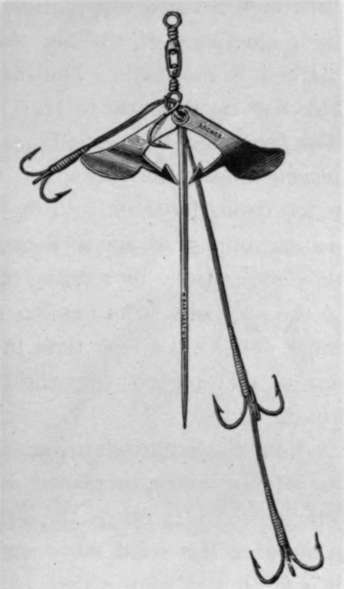
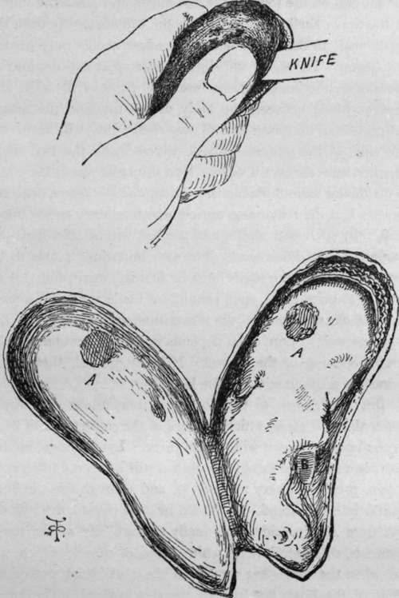

Mussels
Description
This section is from the book "Sea Fishing", by John Bickerdyke. Also available from Amazon: Sea Fishing.
Mussels
The welfare of some thousands of people depends on these shell fish. There is no fish in the sea which will not take them, and they are particularly valuable for haddock and cod fishing. There are mussels and mussels. The smaller species, which are found in salt water, are by no means the best for baits. Far better are the large mussels which grow in the brackish water of estuaries or among the rocks in inlets of the sea where the water is tempered by the inflow of many rivers. The finest, as I said at the beginning of the chapter, are sold for edible and angling purposes at the shell-fish shops. On parts of the Yorkshire coast, as I have before noted, the fishermen actually use mussels ' made in Germany' ! Such is their ignorance of the law that no legend to that effect is marked on the shells. Thousands of sacks full of these invaluable fish are sent over to Hull, and distributed along the coast. The fishermen keep small quantities in baskets weighted and placed among the rocks, but the sea water of the east coast is too strong for them, and they do not live very long. When fishing some years ago in Broad Bay, near Stornoway, we could only get mussels by sending right across the Island of Lewis to the sea-lochs of its western side. Those we obtained were large, and lived a long time in pools among the rocks. The sea in that part of the world is less salt than on our east coast.
Archer Spinner.
Sometimes mussels are scalded or boiled, or put in the oven for a few minutes, or placed in the sun for an hour, either of which processes opens the shell and turns the contents into a more or less solid mass easily adjusted on the hook. But it is far better to use these baits untreated by heat. Sometimes they are opened and salted, but I cannot commend the practice.
For opening mussels there is nothing better than an ordinary oyster knife. If a clasp knife is used, it should have the spring catch at the back, which keeps the blade from closing on to the hand. A small mussel is a difficult thing to open ; large ones should be treated in the manner following—the Scotch method. The end by which the mussel adheres to rocks, etc, is pointed and thick. The upper end broadens out, flattens, and is semicircular. One side has an almost straight edge, the other being curved. Hold the mussel in the left hand so that the narrow end rests in the palm of the hand, the beard and straight edge pointing away from you. Rest the flat end on the joint of the first finger, and place the thumb on the upper shell above it. With the thumb, gently push the upper shell to the left, holding the lower shell firmly on the first finger. The shells will slightly slide apart and disclose an opening for the knife. Then insert the point of the knife and pass the blade between the body of the fish and the broad, flat portion of the lower half of the shell ; this will sever the one side of the powerful muscle which holds the two shells together, and the rest is easy. Run the knife round the edges to divide the various filaments. Then, and not before, prise the shells. Cut the remaining muscle which adheres to the upper shell, fully open both shells, and the bait will be seen lying un-mangled in the lower one. The two important points to be observed are that the shells must be first slid apart, and that no attempt to prise them open should be made until the muscle which is clearly shown in the illustration, and marked a a, has been severed. Sport often depends in a great measure on the careful opening of the mussel. If badly opened, these baits cannot be made to stick on the hook.
HOW TO OPEN A MUSSEL.
But now comes, to the novice, a tremendous difficulty— to put this soft mass, which appears of the consistence of liver, on the hook so that it will remain there. Lying almost hidden between the two halves of the mussel will be seen a little, dark brown, tough, leathery tongue (b), and through this the hook should be first placed. It should next be passed through the bait from side to side, and finally through any of the tough filaments, the round, hard, white piece of muscle which was cut when the knife first went into the shell being put on the point of the hook last to keep the rest in place. The knack of it all is not acquired in a day. But the difficulties are not great if the mussel has not been mangled in the opening. On hand and throw-out lines mussels are often tied with pieces of wool or thread. On long lines the Scotch fishermen cover each mussel with a fleck-like piece of wool spread out and brought over the bait like a fine veil. I never do this, for I find that if the mussel is carefully opened and properly placed on a suitable hook, it will stand being cast out, and with the fine tackle I use I can nearly always feel a bite and strike the fish before the hook is robbed. Professional fishermen, no doubt, so tear the mussel in placing it on their coarse large hooks that tieing on seems almost necessary, particularly for long lines on which fish hook themselves. But there is no general rule on the subject even among professional fishermen.
A very interesting report on mussels was made by a committee appointed by the Secretary for Scotland, in 1889. Nearly all the 50,000 fishermen of Scotland use these baits during some part of the year, and it was a very curious fact that during three years' haddock fishing at Eyemouth the weight of fish caught hardly exceeded the weight of mussels used. The fish weighed 4,665 lbs., the mussels 4,022 lbs. The cost of the mussels was one-eighth of the value of the fish taken with them. There was no question as to there being a growing scarcity of these valuable baits, the fishermen often having to send many miles for them, their cost, including carriage, being as much as 50 s. a ton. There seems no reason why the Scotch mussel beds should not be generally available for bait at moderate prices if properly managed, stringent regulations being required to prevent them from being overworked. So prolific is the mussel that it is only necessary to give the beds on which it has been found a fair chance, under efficient protection and regulation, to insure these fish reproducing themselves in almost unlimited quantities. Under favourable conditions the mussel attains a size of 2 to 2 1/2 inches in about three years.
There are two methods of cultivating mussels. One on the bed system, which is common in Scotch and English waters ; and the bouchot system, as practised in France, the mussels being grown on open wattle fences placed in the water. This method has been attempted without much success in Scotland. It has been asserted that mussels grown on bouchots are not a good colour for bait, being more suitable for table purposes. So far as my own experience goes, one colour is about as good as another only the exceedingly pale mussels not being relished by the fish.
Two or three years ago some Nairn fishermen placed a few tons of minute mussels in a sheltered tidal bay with a sandy bottom. The seed took hold and rapidly grew to a large size. A new lot of seed was brought from the Bay of Findhorn, a noted mussel bed. It took root and, at the end of about two years, spawned. The experiment was regarded as a great success. Fishermen who use the home-cultivated baits are believed to catch many more fish than do the men who use imported mussels. This is a patriotic belief, so let it stand.
Among other uses of mussels is that of making oyster sauce in London restaurants and sundry hotels, both rural and urban. I have known several people made ill by eating these shell fish, and regard them more favourably as baits for fish than as food for human beings. Being anxious to look into the harmfulness or harmlessness of mussels as food, I once put this question to a little fisherboy at Hastings : ' Did you ever know anyone ill after eating mussels ?'
He said ' No' at first, but seeming to hesitate, I repeated the question. ' Only grandmother,' he added.
' And what happened to her ? ' I asked.
' Oh, she swelled up a bit'.
There is something very delightful about that 'only'.
Oysters
Oysters of the commoner kinds make very good baits for most kinds of fish. Not that I suppose a cod or haddock would strongly object to a well-flavoured native, particularly if he had not to pay for it, and the bacteria of typhoid could be guaranteed absent. If oysters are deemed too expensive, their beards can be used.
Continue to:
- prev: The Mackerel
- Table of Contents
- next: Pilchards
Tags
fishing, hooks, bait, fishermen, spanish mackerel, mackerel fishing